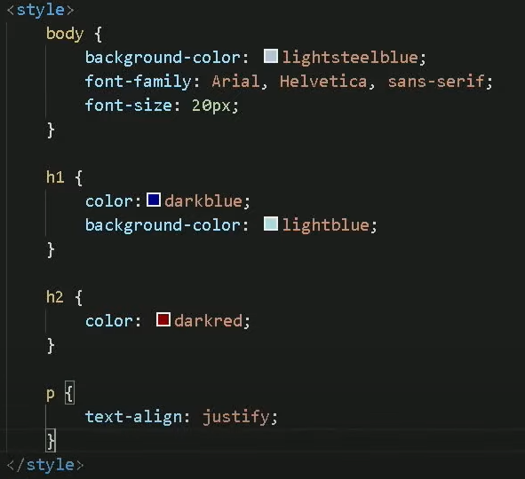

Para colocar os estilos, pode-se usar o comando style="[parâmetros]; [parâmetros; ... ; [parâmetros]" dentro das tags que deseja.
Como, por exemplo: <h1 style="[parâmetros]; ... ; [parâmetros]"> .
Porém, o CSS INLINE fica muito confuso, pois terá que fazer em todos os que quiser e fica muito poluído.
IDEAL PARA ESTILOS PONTUAIS, ESPECÍFICOS.
Para colocar os estilos de maneira eficiente, use a tag <style> [tag] {[parâmetros]} </style> dentro da tag <head>.
Como pode ser visto na imagem abaixo:

IDEAL PARA ESTILOS DE PÁGINAS LOCAIS.
Para colocar o estilos de maneira AINDA MAIS EFICIENTE, é necessário criar um arquivo .css, usualmente chamado de sytle.css.
Depois, dentro da tag <head>, use: <link rel="stylesheet" href="[nomedoarquivo].css"> OU selecione link:css. Usando esse link dentro da página HTML desejável.
OBS:Talvez seja interessante usar a regra @charset "UTF-8";. Para criar uma regra que possa ter compatibilidade com UFT-8.
Pode usar vários [arquivo].css caso seja necessário. Pode usar, também, os estilos CSS INLINE, CSS INTERNO e CSS EXTERNO no mesmo HTML, se for necessário.
IDEAL PARA ESTILOS MUITO GRANDES E QUE SERÁ USADO EM COMUM EM MUITAS PÁGINAS.